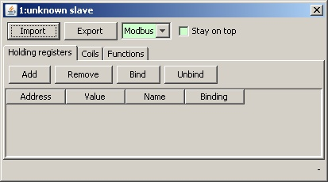
Each slave in the project can have a different MODBUS implementation.
Currently supported implementations are MODBUS
and J-Bus
.
To change the implementation, click on the
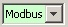
drop-down list, and select the appropriate one.
Select the appropriate tab (Holding registers
or Coils
)
and click on the Add
button in order to define values for the
MODBUS slave.
A new dialog will appear, asking for the first and the last address of the range of values to add into the slave. 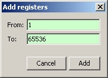 The values are created with '0' by default.
The default value of a holding register or a coil is '0'. It can be modified by double-clicking on the cell of the value. 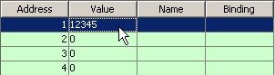 A holding register's value is comprised between 0 and 65535. A coil’s value is either 0 or 1.
Each register/coil can have a name, so that its role is clarified for
the user. To edit the name, double-click on the corresponding Name
cell.
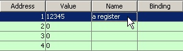
To save time, existing registers/coils can be copied from one address to another. Select the rows to copy and press CTRL+C. Then, select the rows to overwrite and press CTRL+V. Values, names and bindings are duplicated.
The rows can be sorted by address, value or name. Just click on the corresponding table header. 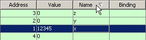
To remove registers or coils, select the corresponding rows and then
click on the Remove
button.
Once a MODBUS slave is fully configured, it can be exported as a
template for creating more slaves with the same configuration. To export
a slave, click on the Export
button and choose an export file.
If the slave contains bindings, an additional dialog will appear to let the user choose if the bindings must be exported as well. In that case, the option to export the related automation(s) is enabled. 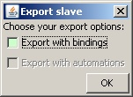
Exported slave configurations can be imported as templates for new
MODBUS slaves. Once a MODBUS slave has been created, click on the
Import
button.
If the imported configuration contains bindings and automations, then an additional dialog will appear to let the user select if they should be imported as well. 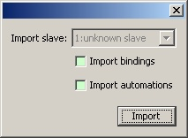
The imported data will be merged with the existing. In case of conflicts, a dialog will appear with proposals to keep the existing data or replace it with the new.
The MODBUS specification defines a range of function codes that is
free for manufacturer specific implementations. In ModbusPal, function
codes from 65 to 75, and 100 to 110 can be associated with user-defined
PDU processors
.
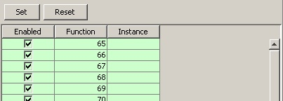
A PDU processor
is an object, defined by a script, that will reply as
needed to those unspecified MODBUS requests. Information on how to write
a PDU processor in Python is available in this page.
To associate a function code to a PDU processor, select one or several
rows (using the SHIFT and/or the CTRL keys) and
click on the Set
button.
A new dialog appears. The user is invited to a select a PDU processor from two different lists: 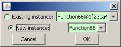
If the PDU processor defines a graphical interface (control panel), then this panel is added to the configuration dialog. 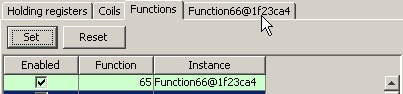
To remove the association between a function code and a PDU processor,
select it and click on the Reset
button.